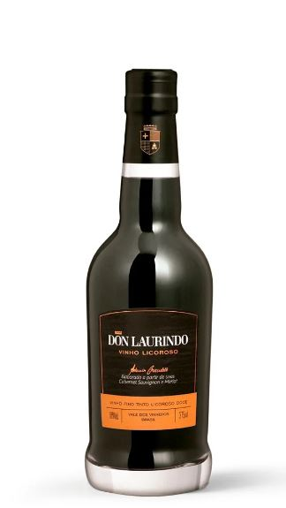

Início
Início
Chile:
Vinho Tinto Chileno Promesa Cabernet Sauvignon. Produzido na Viña de Aguirre, com um volume de 750ml.

Brasil:
Vinho Licoroso Brasileiro Don Laurindo. Produzido no Vale dos Vinhedos, com um volume de 375ml.

Uruguai:
Vinho Rosé Uruguaio Di Mallo. Produzido em Cerro Chapeu, com um volume de 750ml.

Argentina:
Vinho Branco Argentino PORTILLO Sauvignon Blanc. Produzido no Vale do Uco, com um volume de 750ml.